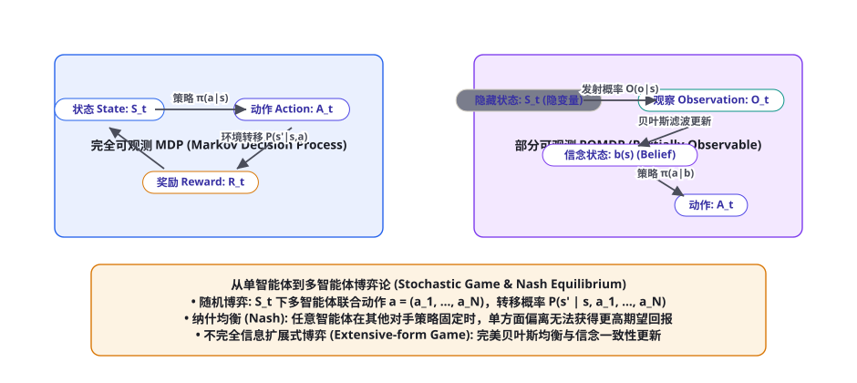
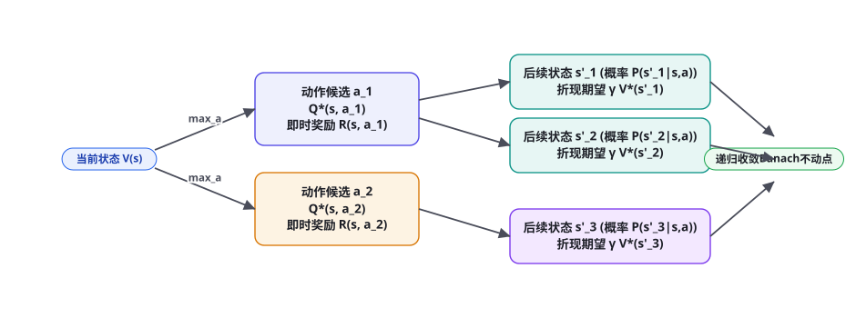

<!DOCTYPE html>
<html lang="zh-CN">
<head>
<meta charset="UTF-8">
<meta name="viewport" content="width=device-width, initial-scale=1.0">
<title>第 91 章 · 智能体形式化：MDP、POMDP 与博弈论基础 — AI Agent Cookbook</title>
<link rel="stylesheet" href="../assets/css/style.css">
</head>
<body>
<div id="progress"></div>

<aside class="sidebar">
  <div class="sidebar-head">
    <a class="logo-row" href="../index.html">
      <span class="logo-mark">AC</span>
      <span class="t">AI Agent Cookbook<span class="s">从入门到精通的智能体全景手册</span></span>
    </a>
    <div class="search-wrap">
      <span class="icon">🔍</span>
      <input id="searchInput" type="text" placeholder="搜索全书…" autocomplete="off">
      <kbd>/</kbd>
      <div id="searchResults" class="search-results"></div>
    </div>
  </div>
  <div class="toc-part"><div class="toc-part-head"><span class="num">0</span>导论<span class="chev">▶</span></div><div class="toc-part-body"><a href="ch001.html"><span class="cn">001</span>前言：为什么是 Agent，为什么是现在</a><a href="ch002.html"><span class="cn">002</span>如何使用本书：三条学习路径与阅读指南</a><a href="ch003.html"><span class="cn">003</span>Agent 通识：定义、心智模型与七十年简史</a></div></div><div class="toc-part"><div class="toc-part-head"><span class="num">1</span>基础篇：LLM 与提示工程<span class="chev">▶</span></div><div class="toc-part-body"><a href="ch004.html"><span class="cn">004</span>LLM 工作原理速成：Transformer 与注意力机制</a><a href="ch005.html"><span class="cn">005</span>Token、上下文窗口与采样策略</a><a href="ch006.html"><span class="cn">006</span>Prompt Engineering 系统指南</a><a href="ch007.html"><span class="cn">007</span>提示工程进阶：提示链、自洽性与元提示</a><a href="ch008.html"><span class="cn">008</span>结构化输出：JSON Mode、Schema 与受约束解码</a><a href="ch009.html"><span class="cn">009</span>LLM 的能力边界：幻觉、知识与推理局限</a><a href="ch010.html"><span class="cn">010</span>Embedding 与向量空间基础</a><a href="ch011.html"><span class="cn">011</span>开发环境与 SDK 速览：OpenAI / Anthropic / 开源模型</a><a href="ch012.html"><span class="cn">012</span>API 工程实践：重试、限流、成本与流式</a><a href="ch013.html"><span class="cn">013</span>评测思维入门：科学地度量 LLM 输出</a></div></div><div class="toc-part"><div class="toc-part-head"><span class="num">2</span>核心机制篇<span class="chev">▶</span></div><div class="toc-part-body"><a href="ch014.html"><span class="cn">014</span>什么是 Agent：自主性光谱与感知-决策-行动</a><a href="ch015.html"><span class="cn">015</span>Agent Loop：大模型 Agent 的心脏</a><a href="ch016.html"><span class="cn">016</span>ReAct：推理与行动的交织范式</a><a href="ch017.html"><span class="cn">017</span>工具调用全景：从 Function Calling 到并行编排</a><a href="ch018.html"><span class="cn">018</span>规划机制：任务分解、Plan-and-Execute 与树搜索</a><a href="ch019.html"><span class="cn">019</span>记忆系统：短期、长期、情景与语义</a><a href="ch020.html"><span class="cn">020</span>RAG 从入门到进阶：分块、索引、检索与重排</a><a href="ch021.html"><span class="cn">021</span>RAG 进阶：HyDE、Self-RAG、GraphRAG 与 Agentic RAG</a><a href="ch022.html"><span class="cn">022</span>反思与自我改进：Reflexion、Self-Refine 与 Critic 模式</a><a href="ch023.html"><span class="cn">023</span>上下文工程：Context Engineering 的艺术</a><a href="ch024.html"><span class="cn">024</span>多 Agent 系统：拓扑、协作协议与角色分工</a><a href="ch025.html"><span class="cn">025</span>人机协同：审批、中断与恢复</a></div></div><div class="toc-part"><div class="toc-part-head"><span class="num">3</span>工程与框架篇<span class="chev">▶</span></div><div class="toc-part-body"><a href="ch026.html"><span class="cn">026</span>Agent 技术栈总览与选型决策树</a><a href="ch027.html"><span class="cn">027</span>从零手写最小 Agent：200 行 Python 的完整实现</a><a href="ch028.html"><span class="cn">028</span>LangChain 与 LangGraph 深度实战</a><a href="ch029.html"><span class="cn">029</span>OpenAI Agents SDK 与 Responses API</a><a href="ch030.html"><span class="cn">030</span>Claude Agent SDK 与 Claude Code 剖析</a><a href="ch031.html"><span class="cn">031</span>AutoGen / AG2：群聊式多智能体框架</a><a href="ch032.html"><span class="cn">032</span>CrewAI：角色驱动的多 Agent 团队</a><a href="ch033.html"><span class="cn">033</span>MetaGPT：软件公司隐喻与 SOP 多智能体</a><a href="ch034.html"><span class="cn">034</span>LlamaIndex：数据框架与 Agent 融合</a><a href="ch035.html"><span class="cn">035</span>低代码平台：Dify、Coze、n8n 与 Flowise</a><a href="ch036.html"><span class="cn">036</span>MCP：Model Context Protocol 详解与生态</a><a href="ch037.html"><span class="cn">037</span>Agent 互操作协议：A2A、AG-UI 与开放生态</a></div></div><div class="toc-part"><div class="toc-part-head"><span class="num">4</span>训练与强化篇<span class="chev">▶</span></div><div class="toc-part-body"><a href="ch038.html"><span class="cn">038</span>训练全景图：预训练 → SFT → RLHF → Agent 训练</a><a href="ch039.html"><span class="cn">039</span>SFT 指令微调实操：数据构建与 LoRA/QLoRA</a><a href="ch040.html"><span class="cn">040</span>RLHF 与 PPO：三阶段详解</a><a href="ch041.html"><span class="cn">041</span>DPO 及变体：IPO、KTO、SimPO、ORPO</a><a href="ch042.html"><span class="cn">042</span>RLAIF、Constitutional AI 与自我奖励</a><a href="ch043.html"><span class="cn">043</span>RLVR：可验证奖励的强化学习与推理范式</a><a href="ch044.html"><span class="cn">044</span>工具使用训练：Toolformer、Gorilla 与 ToolRL</a><a href="ch045.html"><span class="cn">045</span>Agent RL：WebRL、AgentGym、AgentTuning 与进化式训练</a><a href="ch046.html"><span class="cn">046</span>过程奖励与结果奖励：PRM、ORM 与奖励设计</a><a href="ch047.html"><span class="cn">047</span>合成数据工程：Self-Instruct、Evol-Instruct 与数据飞轮</a><a href="ch048.html"><span class="cn">048</span>蒸馏与小型化：让小模型拥有 Agentic 能力</a><a href="ch049.html"><span class="cn">049</span>Self-Play 与持续学习：Agent 的自我进化</a></div></div><div class="toc-part"><div class="toc-part-head"><span class="num">5</span>评测基准篇<span class="chev">▶</span></div><div class="toc-part-body"><a href="ch050.html"><span class="cn">050</span>Agent 评测方法论：静态到动态、过程到结果</a><a href="ch051.html"><span class="cn">051</span>代码 Agent 基准：SWE-bench 家族与 LiveCodeBench</a><a href="ch052.html"><span class="cn">052</span>Web 与 Computer-Use 基准：WebArena、OSWorld、Mind2Web</a><a href="ch053.html"><span class="cn">053</span>通用 Agent 基准：GAIA、AgentBench、τ-bench 与 BrowseComp</a><a href="ch054.html"><span class="cn">054</span>工具调用评测：BFCL、ToolSandbox 与 StableToolBench</a><a href="ch055.html"><span class="cn">055</span>安全评测：注入攻击基准与自动化红队</a><a href="ch056.html"><span class="cn">056</span>构建你自己的评测：沙箱、容器化与 CI 集成</a><a href="ch057.html"><span class="cn">057</span>LLM-as-Judge 与评测的可信度</a></div></div><div class="toc-part"><div class="toc-part-head"><span class="num">6</span>安全与对齐篇<span class="chev">▶</span></div><div class="toc-part-body"><a href="ch058.html"><span class="cn">058</span>Agent 威胁模型：攻击面全景</a><a href="ch059.html"><span class="cn">059</span>Prompt Injection 攻防：直接注入、间接注入与防线</a><a href="ch060.html"><span class="cn">060</span>权限与沙箱：最小权限、能力模型与执行隔离</a><a href="ch061.html"><span class="cn">061</span>数据外泄与供应链安全</a><a href="ch062.html"><span class="cn">062</span>越狱与滥用防治</a><a href="ch063.html"><span class="cn">063</span>幻觉治理与事实性工程</a><a href="ch064.html"><span class="cn">064</span>对齐与价值观：从 RLHF 到宪政 AI 的落地</a><a href="ch065.html"><span class="cn">065</span>治理、合规与责任：AI Act 时代的 Agent 运营</a></div></div><div class="toc-part"><div class="toc-part-head"><span class="num">7</span>多模态与具身篇<span class="chev">▶</span></div><div class="toc-part-body"><a href="ch066.html"><span class="cn">066</span>视觉语言模型与多模态 Agent 基础</a><a href="ch067.html"><span class="cn">067</span>GUI Agent：从 WebVoyager 到 Computer Use</a><a href="ch068.html"><span class="cn">068</span>移动与操作系统 Agent：AppAgent 与 OS-Copilot</a><a href="ch069.html"><span class="cn">069</span>具身智能导览：RT-2、PaLM-E 与 VLA 模型</a><a href="ch070.html"><span class="cn">070</span>游戏与仿真 Agent：MineDojo、Voyager 与 Genie</a><a href="ch071.html"><span class="cn">071</span>科学发现 Agent：Coscientist、ChemCrow 与 AI Scientist</a><a href="ch072.html"><span class="cn">072</span>语音 Agent 与实时多模态交互</a></div></div><div class="toc-part"><div class="toc-part-head"><span class="num">8</span>前沿专题篇<span class="chev">▶</span></div><div class="toc-part-body"><a href="ch073.html"><span class="cn">073</span>Deep Research：深度研究 Agent 架构解密</a><a href="ch074.html"><span class="cn">074</span>Coding Agent：从 Copilot 到 Devin 再到 Claude Code</a><a href="ch075.html"><span class="cn">075</span>Computer Use 与 Browser Use 前沿</a><a href="ch076.html"><span class="cn">076</span>长时程 Agent：小时级任务、压缩与 Checkpointing</a><a href="ch077.html"><span class="cn">077</span>World Models：Agent 的世界理解与想象</a><a href="ch078.html"><span class="cn">078</span>Agent 经济学：成本、延迟与质量的权衡</a><a href="ch079.html"><span class="cn">079</span>可观测性：Tracing、Eval 与监控</a><a href="ch080.html"><span class="cn">080</span>Agent 系统规模化：队列、并发与可靠性</a></div></div><div class="toc-part"><div class="toc-part-head"><span class="num">9</span>实战项目篇<span class="chev">▶</span></div><div class="toc-part-body"><a href="ch081.html"><span class="cn">081</span>项目 1：个人知识库问答 Agent（RAG 全流程）</a><a href="ch082.html"><span class="cn">082</span>项目 2：自动化数据分析师 Agent</a><a href="ch083.html"><span class="cn">083</span>项目 3：复刻 Deep Research 研究助手</a><a href="ch084.html"><span class="cn">084</span>项目 4：浏览器自动化 Agent</a><a href="ch085.html"><span class="cn">085</span>项目 5：代码审查与修复 Agent</a><a href="ch086.html"><span class="cn">086</span>项目 6：多 Agent 内容工厂</a><a href="ch087.html"><span class="cn">087</span>项目 7：客服工单 Agent（含人工升级）</a><a href="ch088.html"><span class="cn">088</span>项目 8：本地化 Agent（Ollama + 端侧模型）</a><a href="ch089.html"><span class="cn">089</span>生产化：部署、网关、缓存与成本控制</a><a href="ch090.html"><span class="cn">090</span>案例研究：Devin、Manus、Claude Code 与 Cursor 拆解</a></div></div><div class="toc-part"><div class="toc-part-head"><span class="num">10</span>理论基础篇<span class="chev">▶</span></div><div class="toc-part-body"><a href="ch091.html"><span class="cn">091</span>形式化基础：MDP、POMDP 与 Agent 数学语言</a><a href="ch092.html"><span class="cn">092</span>LLM 作为策略：In-context RL 与序列建模视角</a><a href="ch093.html"><span class="cn">093</span>搜索算法：从 BFS/A* 到 MCTS 与 LLM 结合</a><a href="ch094.html"><span class="cn">094</span>规划理论：经典规划、HTN 与 LLM+P</a><a href="ch095.html"><span class="cn">095</span>经典 Agent 理论：BDI、Soar、ACT-R 的遗产</a><a href="ch096.html"><span class="cn">096</span>概率与决策：贝叶斯视角与多臂老虎机</a><a href="ch097.html"><span class="cn">097</span>世界模型与生成式仿真</a><a href="ch098.html"><span class="cn">098</span>涌现、Scaling Laws 与 Agent 的未来能力</a></div></div><div class="toc-part"><div class="toc-part-head"><span class="num">11</span>论文库篇<span class="chev">▶</span></div><div class="toc-part-body"><a href="ch099.html"><span class="cn">099</span>论文阅读方法论：如何高效读 Agent 论文</a><a href="ch100.html"><span class="cn">100</span>奠基论文精读十篇</a><a href="ch101.html"><span class="cn">101</span>核心机制论文地图：记忆、RAG、规划与多智能体</a><a href="ch102.html"><span class="cn">102</span>训练与强化论文地图</a><a href="ch103.html"><span class="cn">103</span>评测与安全论文地图</a><a href="ch104.html"><span class="cn">104</span>2024-2026 前沿论文追踪清单（100 篇）</a></div></div><div class="toc-part"><div class="toc-part-head"><span class="num">12</span>项目与资源库篇<span class="chev">▶</span></div><div class="toc-part-body"><a href="ch105.html"><span class="cn">105</span>开源框架横评与选型决策树</a><a href="ch106.html"><span class="cn">106</span>50 个值得 Star 的开源 Agent 项目</a><a href="ch107.html"><span class="cn">107</span>数据集与基准资源大全</a><a href="ch108.html"><span class="cn">108</span>学习资源：课程、书籍、博客与社区</a><a href="ch109.html"><span class="cn">109</span>从本书到 GitHub：贡献指南与扩展路线</a></div></div><div class="toc-part"><div class="toc-part-head"><span class="num">13</span>面试与速查篇<span class="chev">▶</span></div><div class="toc-part-body"><a href="ch110.html"><span class="cn">110</span>Agent 工程师面试题库：基础 50 题精解</a><a href="ch111.html"><span class="cn">111</span>Agent 工程师面试题库：进阶 50 题精解</a><a href="ch112.html"><span class="cn">112</span>系统设计面试：设计 Deep Research / Coding Agent</a><a href="ch113.html"><span class="cn">113</span>术语表：300 条 Agent 核心术语速查</a></div></div>
  <div class="sidebar-foot">
    <span>v1.0 · 开源书籍</span>
    <button class="theme-toggle">🌙 深色</button>
  </div>
</aside>
<div class="scrim"></div>

<div class="topbar">
  <button class="menu-btn">☰</button>
  <span class="title">AI Agent Cookbook</span>
</div>

<main class="main">
  <div class="content">

    <nav class="crumb">
      <a href="../index.html">首页</a><span class="sep">/</span>
      <a href="../index.html#part-10">第十部分 · 理论篇</a><span class="sep">/</span>
      <span>第 91 章</span>
    </nav>

    <header class="chapter-header">
      <div class="chapter-meta">
        <span class="badge lv-高级">高级</span>
        <span class="badge tag">理论</span>
        <span class="badge tag">MDP</span>
        <span class="badge tag">POMDP</span>
        <span class="badge tag">博弈论</span>
        <span class="badge">⏱ 约 60 分钟</span>
      </div>
      <h1>第 91 章 · 智能体形式化：MDP、POMDP 与博弈论基础</h1>
      <p class="lead">第十部分理论篇开篇之作：在经历了第九部分整整十个工业级大项目的实战洗礼之后，我们必须抽丝剥茧，探寻智能体行为背后的严密数学基石。为什么大语言模型的思考过程可以被形式化为一个马尔可夫决策过程？面对真实世界极其普遍的信息不完全与观测噪声，POMDP（部分可观测马尔可夫决策过程）是如何利用信念状态（Belief State）推演全局的？在多智能体互相对抗或协作的深水区，博弈论中的纳什均衡与贝叶斯博弈又扮演着怎样的决定性角色？本章将用严谨的数学推导与形式化语言，为全书筑牢最坚实的理论地基。</p>
    </header>

    <h2 id="mdp-formalism">马尔可夫决策过程（MDP）：决策的数学基石</h2>

    <figure class="figure">
      
      <figcaption><span class="fig-no">图 91-1</span>智能体形式化理论演进：完全可观测 MDP 闭环 → 部分可观测 POMDP 信念状态贝叶斯滤波更新 → 多智能体随机博弈与纳什均衡拓扑。</figcaption>
    </figure>

    <p>任何自主智能体（Autonomous Agent）在环境中的感知与行动循环，在完全可观测的理想假设下，都可以被形式化为一个<strong>马尔可夫决策过程（Markov Decision Process, MDP）</strong>。一个标准的 MDP 由经典的五元组定义：</p>

    <p>$$\mathcal{M} = \langle \mathcal{S}, \mathcal{A}, \mathcal{P}, \mathcal{R}, \gamma \rangle$$</p>

    <p><strong>1. 状态空间 $\mathcal{S}$（State Space）：</strong>环境中所有可能物理或逻辑状态的集合。在基于 LLM 的 Agent 中，状态可以具象化为当前的对话历史上下文、内存黑板中的变量键值以及外部数据库的当前快照。</p>
    <p><strong>2. 动作空间 $\mathcal{A}$（Action Space）：</strong>智能体在特定状态下被允许执行的所有合法动作集合。对于大模型智能体，既包括自回归生成的文本 Token（内生思考），也包括离散的工具调用指令（如 <code>bash_execute(cmd)</code> 或 <code>web_search(q)</code>）。</p>
    <p><strong>3. 状态转移概率函数 $\mathcal{P}$（Transition Probability）：</strong>定义了环境在状态 $s$ 下接收到动作 $a$ 后，跃迁转移到下一个状态 $s'$ 的条件概率分布：</p>

    <p>$$\mathcal{P}(s' \mid s, a) = \mathbb{P}(S_{t+1} = s' \mid S_t = s, A_t = a)$$</p>

    <p>马尔可夫性质（Markov Property）的精髓在于<strong>「未来独立于过去，仅依赖于当下」</strong>：已知当前状态 $S_t$ 的前提下，转移到 $S_{t+1}$ 的概率分布与历史轨迹 $S_0, A_0, S_1, ..., S_{t-1}$ 完全无关。在 Transformer 架构中，尽管注意力机制会全局读取整个上下文，但在自回归建模中，当前上下文窗口内的所有 Token 组合即构成了完备的即时马尔可夫状态表征。</p>
    <p><strong>4. 奖励函数 $\mathcal{R}$（Reward Function）：</strong>标量反馈信号，定义了在状态 $s$ 转移至 $s'$ 时环境赋予的即时收益：$\mathcal{R}(s, a) = \mathbb{E}[R_{t+1} \mid S_t = s, A_t = a]$。在 Agent 评估中，这可以是编译通过与否（0 或 1）、数学定理证明成功与否，或者人类偏好的标量得分。</p>
    <p><strong>5. 折现因子 $\gamma \in [0, 1)$（Discount Factor）：</strong>量化了当前即时收益相比于遥远未来收益的时间权重价值。$\gamma \to 0$ 诱导智能体表现为短视的贪心策略，而 $\gamma \to 1$ 则迫使智能体进行深谋远虑的长程规划。</p>

    <h2 id="bellman-optimality">贝尔曼最优方程与不动点收敛定理</h2>

    <figure class="figure">
      
      <figcaption><span class="fig-no">图 91-2</span>贝尔曼最优方程（Bellman Optimality Equation）的树状展开结构：状态价值 $V^*(s)$ 是所有候选动作动作价值 $Q^*(s, a)$ 的极大值（$\max_a$），通过巴拿赫不动点定理（Banach Fixed-Point Theorem）保证价值迭代在全局唯一极值点收敛。</figcaption>
    </figure>

    <p>智能体的核心目标是寻找一个最优策略 $\pi^*: \mathcal{S} \to \mathcal{P}(\mathcal{A})$，使得未来累计折现回报的期望值最大化。理查德·贝尔曼（Richard Bellman）在 20 世纪 50 年代提出了奠基性的<strong>贝尔曼最优方程（Bellman Optimality Equation）</strong>：</p>

    <p>状态价值函数（State-Value Function）的最优形式定义为：</p>

    <p>$$V^*(s) = \max_{a \in \mathcal{A}} \left[ \mathcal{R}(s, a) + \gamma \sum_{s' \in \mathcal{S}} \mathcal{P}(s' \mid s, a) V^*(s') \right]$$</p>

    <p>动作价值函数（Action-Value Function / Q-Function）的最优形式定义为：</p>

    <p>$$Q^*(s, a) = \mathcal{R}(s, a) + \gamma \sum_{s' \in \mathcal{S}} \mathcal{P}(s' \mid s, a) \max_{a' \in \mathcal{A}} Q^*(s', a')$$</p>

    <div class="callout deep">
      <div class="co-title">🔬 数学严密证明：为什么贝尔曼最优算子必定全局收敛（巴拿赫不动点定理）</div>
      <p>定义贝尔曼最优算子（Bellman Optimality Operator）$\mathcal{T}^*$ 作用于价值函数空间 $\mathbb{R}^{|\mathcal{S}|}$：</p>
      <p>$$(\mathcal{T}^* V)(s) = \max_{a \in \mathcal{A}} \left[ \mathcal{R}(s, a) + \gamma \sum_{s' \in \mathcal{S}} \mathcal{P}(s' \mid s, a) V(s') \right]$$</p>
      <p>对于任意两个不同的价值函数 $U$ 和 $V$，考察它们在无穷范数（$\|X\|_\infty = \max_s |X(s)|$）下的距离：</p>
      <p>$$\| \mathcal{T}^* U - \mathcal{T}^* V \|_\infty = \max_{s} \left| \max_a \left[ \mathcal{R}(s, a) + \gamma \sum_{s'} \mathcal{P}(s'|s,a) U(s') \right] - \max_{a'} \left[ \mathcal{R}(s, a') + \gamma \sum_{s'} \mathcal{P}(s'|s,a') V(s') \right] \right|$$</p>
      <p>利用不等式 $|\max_x f(x) - \max_x g(x)| \le \max_x |f(x) - g(x)|$，我们有：</p>
      <p>$$\| \mathcal{T}^* U - \mathcal{T}^* V \|_\infty \le \max_{s, a} \left| \gamma \sum_{s'} \mathcal{P}(s'|s, a) (U(s') - V(s')) \right| \le \gamma \max_{s'} |U(s') - V(s')| = \gamma \| U - V \|_\infty$$</p>
      <p>因为折现因子 $\gamma < 1$，所以 $\mathcal{T}^*$ 是一个<strong>严格的 $\gamma$-压缩映射（$\gamma$-Contraction Mapping）</strong>。根据泛函分析中的<strong>巴拿赫不动点定理（Banach Fixed-Point Theorem）</strong>，在完备度量空间（如实数赋范向量空间）中，压缩映射必然存在且仅存在唯一的固定点 $V^*$，并且无论从任何初始价值函数 $V_0$ 出发，通过反复应用价值迭代算子 $V_{k+1} = \mathcal{T}^* V_k$，序列必然以几何级数速度指数级收敛于最优值 $V^*$！这是整个强化学习算法能够在数学上被严格证明有效的最高基石。</p>
    </div>

    <h2 id="pomdp-formalism">部分可观测马尔可夫决策过程（POMDP）与信念状态</h2>
    <p>在现实世界的复杂任务中（例如第 83 章 Deep Research 爬取互联网，或第 89 章操控桌面），智能体<strong>几乎永远不可能拥有对全局物理世界的完全观测（Full Observability）</strong>：网页背后的私有数据库不可见、其他用户的并发输入不可见、网络延迟何时丢包不可见。此时，MDP 必须扩展为更为现实和高级的<strong>部分可观测马尔可夫决策过程（Partially Observable Markov Decision Process, POMDP）</strong>。</p>

    <p>一个标准的 POMDP 由七元组定义：</p>

    <p>$$\mathcal{M}_{\text{POMDP}} = \langle \mathcal{S}, \mathcal{A}, \mathcal{P}, \mathcal{R}, \Omega, \mathcal{O}, \gamma \rangle$$</p>

    <p>其中相比于普通 MDP，新增了两个至关重要的观测组件：<br>
    - <strong>观测空间 $\Omega$（Observation Space）：</strong>智能体通过传感器或外设所能捕获到的离散观测值集合 $o \in \Omega$（例如当前画面的局部截屏，或 API 返回的局部 JSON）。<br>
    - <strong>观测发射概率函数 $\mathcal{O}$（Observation Function）：</strong>定义了在底层隐藏真实状态 $s'$ 与动作 $a$ 下，智能体感知到观测 $o$ 的条件概率：$\mathcal{O}(o \mid s', a) = \mathbb{P}(O_{t+1} = o \mid S_{t+1} = s', A_t = a)$。</p>

    <h3 id="belief-state">信念状态（Belief State）的贝叶斯滤波更新</h3>
    <p>由于真实物理状态 $s \in \mathcal{S}$ 被遮蔽，智能体无法直接以状态作为策略输入。POMDP 的精髓在于维护一个<strong>信念状态（Belief State）$b \in \Delta(\mathcal{S})$</strong>，它是整个隐藏状态空间上的一个概率分布：$b(s) = \mathbb{P}(S_t = s \mid H_t)$，其中 $H_t = (a_0, o_1, a_1, ..., o_t)$ 为完整的历史交互轨迹。</p>
    <p>当智能体执行动作 $a$ 并捕获到全新观测 $o$ 时，信念状态通过经典的<strong>贝叶斯滤波方程（Bayesian Filtering Update）</strong>进行动态递归更新：</p>

    <p>$$b'(s') = \frac{\mathcal{O}(o \mid s', a) \sum_{s \in \mathcal{S}} \mathcal{P}(s' \mid s, a) b(s)}{\mathbb{P}(o \mid b, a)}$$</p>

    <p>其中归一化分母为当前感知证据的边缘先验概率：$\mathbb{P}(o \mid b, a) = \sum_{s'' \in \mathcal{S}} \mathcal{O}(o \mid s'', a) \sum_{s \in \mathcal{S}} \mathcal{P}(s'' \mid s, a) b(s)$。数学上极其精妙的是：<strong>原先在非马尔可夫历史序列上的决策问题，通过信念状态转换，重新被映射为一个在连续信念空间 $\Delta(\mathcal{S})$ 上的完全可观测信念 MDP（Belief MDP）！</strong>这也是大模型系统利用长短期记忆（第 17 章与第 93 章）持续压缩并更新上下文内部表征的深层数学本质。</p>

    <h2 id="game-theory-foundations">多智能体博弈论：纳什均衡与贝叶斯博弈</h2>
    <p>当环境中存在多个自主智能体同时决策与行动时，单一智能体的最优动作往往取决于对手的选择。环境的转移概率不再仅仅由单一动作主导，而是由全体智能体的<strong>联合动作向量（Joint Action）</strong>$\mathbf{a} = (a_1, a_2, ..., a_N)$ 共同决定。这就是<strong>随机博弈（Stochastic Game / Markov Game）</strong>的范畴。</p>

    <div class="tbl-wrap">
      <table>
        <thead><tr><th>博弈分类形式</th><th>信息结构定义</th><th>核心均衡求解概念</th><th>典型 AI Agent 现实场景</th></tr></thead>
        <tbody>
          <tr><td><strong>完全信息静态博弈 (Normal-Form)</strong></td><td>所有玩家同时行动，对彼此支付函数完全知晓</td><td>纯策略 / 混合策略<strong>纳什均衡 (Nash Equilibrium)</strong></td><td>双智能体资源竞价、囚徒困境式协同分工</td></tr>
          <tr><td><strong>完全信息动态博弈 (Extensive-Form)</strong></td><td>玩家有先后行动顺序，包含博弈树与子博弈</td><td><strong>子博弈精炼纳什均衡 (SPE)</strong>，逆向归纳法</td><td>代码评审中 Coder 与 Reviewer 的多轮博弈对抗 (第84章)</td></tr>
          <tr><td><strong>不完全信息贝叶斯博弈 (Bayesian Game)</strong></td><td>玩家对对手的真实类型（Type / 目标函数）存在不确定性</td><td><strong>贝叶斯纳什均衡 (BNE)</strong> 与完美贝叶斯均衡 (PBE)</td><td>红蓝对抗中渗透 Agent 猜测防御方真实 WAF 规则 (第88章)</td></tr>
        </tbody>
      </table>
      <caption>表 91-1 · 博弈论核心模型分类矩阵与多智能体系统映射。从静态支付矩阵到动态类型推断。</caption>
    </div>

    <h3 id="nash-equilibrium-math">纳什均衡的严格数学形式化</h3>
    <p>在一个包含 $N$ 个智能体的博弈中，设第 $i$ 个智能体的策略为 $\pi_i \in \Pi_i$，其期望累积效用收益为 $J_i(\pi_i, \boldsymbol{\pi}_{-i})$，其中 $\boldsymbol{\pi}_{-i} = (\pi_1, ..., \pi_{i-1}, \pi_{i+1}, ..., \pi_N)$ 代表除智能体 $i$ 之外所有其他对手的联合策略向量。</p>
    <p>一个策略组合 $\boldsymbol{\pi}^* = (\pi_1^*, \pi_2^*, ..., \pi_N^*)$ 被称为<strong>纳什均衡点（Nash Equilibrium）</strong>，当且仅当对任意智能体 $i \in \{1, ..., N\}$，在其他对手维持最优策略 $\boldsymbol{\pi}_{-i}^*$ 不变的前提下，智能体 $i$ 单方面偏离到任何其他策略 $\pi_i$，都无法获得更高的期望收益：</p>

    <p>$$J_i(\pi_i^*, \boldsymbol{\pi}_{-i}^*) \ge J_i(\pi_i, \boldsymbol{\pi}_{-i}^*), \quad \forall \pi_i \in \Pi_i, \; \forall i \in \{1, ..., N\}$$</p>

    <p>约翰·纳什（John Nash）在 1950 年利用布劳威尔不动点定理（Brouwer Fixed-Point Theorem）证明：<strong>在有限智能体与有限纯动作集合的博弈中，至少存在一个混合策略纳什均衡。</strong>这一定理深刻启示了现代多智能体对齐算法（如第 49 章 Self-Play 与 Minimax 训练）：在自博弈演化过程中，智能体矩阵的对抗演进目标是逼近纳什均衡态，从而消除任何可被对手轻易利用的确定性策略漏洞。</p>

    <h2 id="core-implementation">形式化模拟代码：POMDP 信念状态贝叶斯更新实现</h2>
    <p>以下给出基于 Python 的 POMDP 信念更新与信念 MDP 模拟核心计算引擎，展示隐藏状态转移、观测发射与贝叶斯后验概率更新的严密数值计算过程：</p>

    <div class="codeblock">
      <div class="cb-head"><span>POMDP 信念状态贝叶斯滤波与转移引擎（pomdp_formalism.py）</span><button class="cb-copy">复制</button></div>
      <pre><code>import numpy as np
from typing import Dict, List, Tuple

class FormalPOMDPEngine:
    def __init__(self, states: List[str], actions: List[str], observations: List[str]):
        self.states = states                  # 隐藏状态集合 S
        self.actions = actions                # 动作集合 A
        self.observations = observations      # 观测集合 O
        self.num_states = len(states)
        self.num_actions = len(actions)
        self.num_obs = len(observations)

        # 状态转移矩阵 P(s' | s, a): shape (num_actions, num_states, num_states)
        self.transition_matrix = np.zeros((self.num_actions, self.num_states, self.num_states))
        # 观测发射概率矩阵 O(o | s', a): shape (num_actions, self.num_states, num_obs)
        self.observation_matrix = np.zeros((self.num_actions, self.num_states, self.num_obs))

    def update_belief_state(self, current_belief: np.ndarray, action_idx: int, obs_idx: int) -> np.ndarray:
        """根据贝叶斯滤波公式执行严格信念状态后验更新 b'(s')"""
        # Step 1: 状态预测推进 \sum_s P(s' | s, a) * b(s)
        predicted_belief = np.zeros(self.num_states)
        for s_prime in range(self.num_states):
            predicted_belief[s_prime] = np.sum(
                self.transition_matrix[action_idx, :, s_prime] * current_belief
            )

        # Step 2: 结合观测似然 O(o | s', a) 进行证据更新
        likelihood = self.observation_matrix[action_idx, :, obs_idx]
        unnormalized_belief = likelihood * predicted_belief

        # Step 3: 计算边缘概率证据归一化分母
        evidence_prob = np.sum(unnormalized_belief)
        if evidence_prob == 0:
            raise ValueError("不可达观测: 观测似然全零，模型概率矩阵与物理证据冲突！")

        new_belief = unnormalized_belief / evidence_prob
        return new_belief

# ================= 数值示例验证演示 =================
if __name__ == "__main__":
    # 模拟著名的智能体寻宝问题: 宝藏可能在房间 A 或房间 B (真实状态被遮蔽)
    states = ["Treasure_in_A", "Treasure_in_B"]
    actions = ["Listen", "Open_A", "Open_B"]
    observations = ["Hear_Left", "Hear_Right"]

    engine = FormalPOMDPEngine(states, actions, observations)

    # 1. 设定转移概率 (Listen 动作不改变宝藏位置，恒等变换)
    engine.transition_matrix[0, 0, 0] = 1.0  # Listen: A -> A
    engine.transition_matrix[0, 1, 1] = 1.0  # Listen: B -> B

    # 2. 设定有噪声的传感器发射概率 (85% 准确率，15% 听错噪声)
    # Listen 动作下: 在 A 听到 Left 概率 0.85; 听到 Right 概率 0.15
    engine.observation_matrix[0, 0, 0] = 0.85
    engine.observation_matrix[0, 0, 1] = 0.15
    # 在 B 听到 Left 概率 0.15; 听到 Right 概率 0.85
    engine.observation_matrix[0, 1, 0] = 0.15
    engine.observation_matrix[0, 1, 1] = 0.85

    # 初始先验信念: 均匀分布 (各 50% 概率)
    initial_b = np.array([0.5, 0.5])
    print(f"初始先验信念状态: P(A)={initial_b[0]:.2f}, P(B)={initial_b[1]:.2f}")

    # 动作: 智能体执行第 1 次 Listen (action_idx=0)，听到 Hear_Left (obs_idx=0)
    b1 = engine.update_belief_state(initial_b, action_idx=0, obs_idx=0)
    print(f"第1次观测 [Hear_Left] 后信念更新: P(A)={b1[0]:.4f}, P(B)={b1[1]:.4f}")

    # 动作: 智能体再次执行 Listen (action_idx=0)，再次听到 Hear_Left (obs_idx=0)
    b2 = engine.update_belief_state(b1, action_idx=0, obs_idx=0)
    print(f"第2次观测 [Hear_Left] 后连续更新: P(A)={b2[0]:.4f}, P(B)={b2[1]:.4f}")</code></pre>
    </div>

    <h2 id="stochastic-games">随机博弈与多智能体强化学习（MARL）前沿理论</h2>
    <p>在多智能体系统（Multi-Agent System, MAS）中，各玩家的利益关系呈现出多样化的结构：<strong>纯合作博弈（Team Game / Cooperative）</strong>、<strong>零和博弈（Zero-Sum Game / Competitive）</strong>以及<strong>一般和混合博弈（General-Sum Game）</strong>。不同博弈结构直接决定了策略学习的最优算法收敛边界：</p>

    <div class="tbl-wrap">
      <table>
        <thead><tr><th>博弈结构类型</th><th>利益关系代数定义</th><th>全局最优准则</th><th>主流 MARL 算法基石</th></tr></thead>
        <tbody>
          <tr><td><strong>完全合作博弈 (Dec-POMDP)</strong></td><td>$\mathcal{R}_1 = \mathcal{R}_2 = ... = \mathcal{R}_N$</td><td>帕累托最优（Pareto Optimality），最大化群体共同收益</td><td>VDN, QMIX (值分解网络, 遵循 IGM 条件)</td></tr>
          <tr><td><strong>双人零和博弈 (Two-Player Zero-Sum)</strong></td><td>$\mathcal{R}_1 + \mathcal{R}_2 = 0$</td><td>极小化极大定理（Minimax Theorem），强对偶性</td><td>Fictitious Play, Policy Space Response Oracles (PSRO)</td></tr>
          <tr><td><strong>一般和非零和博弈 (General-Sum)</strong></td><td>各方拥有独立且可能冲突的奖励函数 $\mathcal{R}_i$</td><td>相关均衡（Correlated Equilibrium）与粗相关均衡</td><td>MADDPG, MAPPO (中心化训练分布式执行 CTDE)</td></tr>
        </tbody>
      </table>
      <caption>表 91-2 · 多智能体博弈结构分类与算法演进全景。奠定从合作价值分解到零和对抗自博弈的理论体系。</caption>
    </div>

    
    <h2 id="value-policy-iteration">数值求解算法：价值迭代（Value Iteration）与策略迭代（Policy Iteration）</h2>
    <p>在已知环境模型 $\mathcal{P}$ 与 $\mathcal{R}$ 的动态规划设定下，求解最优策略主要有两条经典定理路线：<strong>价值迭代（Value Iteration）</strong>与<strong>策略迭代（Policy Iteration）</strong>。理解这两者的数学差异，是洞悉强化学习离散与连续优化算法分水岭的钥匙。</p>
    
    <p><strong>策略迭代（Howard, 1960）：</strong>将求解过程显式解耦为两步交替循环：<br>
    ① <strong>策略评估（Policy Evaluation）：</strong>固定当前策略 $\pi_k$，求解线性方程组 $V^{\pi_k} = \mathcal{R}^{\pi_k} + \gamma \mathcal{P}^{\pi_k} V^{\pi_k}$，精确计算出当前策略下的真实价值分布；<br>
    ② <strong>策略改进（Policy Improvement）：</strong>基于贪心准则更新策略：$\pi_{k+1}(s) = rg\max_a \left[ \mathcal{R}(s, a) + \gamma \sum_{s'} \mathcal{P}(s'|s, a) V^{\pi_k}(s') 
ight]$。<br>
    策略改进定理（Policy Improvement Theorem）严格证明了 $V^{\pi_{k+1}}(s) \ge V^{\pi_k}(s)$ 对所有状态恒成立，并且由于有限状态动作空间的策略总数是有限的（至多 $|\mathcal{A}|^{|\mathcal{S}|}$ 种），策略迭代保证在<strong>有限步内严格收敛到绝对最优策略</strong>！</p>

    <p><strong>价值迭代（Bellman, 1957）：</strong>它将策略评估与策略改进融为一体，每一次迭代仅应用一次贝尔曼最优算子更新价值：$V_{k+1} = \mathcal{T}^* V_k$。无需等待价值函数在当前策略下完全收敛，每次迭代直接取最大化动作。其收敛速度由压缩比率 $\gamma^k$ 决定，属于<strong>渐进几何级数收敛</strong>。</p>

    <div class="codeblock">
      <div class="cb-head"><span>动态规划价值迭代与策略迭代数值求解器（dp_solvers.py）</span><button class="cb-copy">复制</button></div>
      <pre><code>import numpy as np

class MDPDynamicProgramming:
    def __init__(self, num_states: int, num_actions: int, P: np.ndarray, R: np.ndarray, gamma: float = 0.95):
        self.ns = num_states
        self.na = num_actions
        self.P = P          # 转移概率 P(s' | s, a), shape: (na, ns, ns)
        self.R = R          # 即时奖励 R(s, a), shape: (ns, na)
        self.gamma = gamma

    def value_iteration(self, theta: float = 1e-6) -> Tuple[np.ndarray, np.ndarray]:
        """价值迭代算法: 基于巴拿赫压缩映射的不动点求解"""
        V = np.zeros(self.ns)
        while True:
            delta = 0.0
            V_new = np.zeros(self.ns)
            for s in range(self.ns):
                # 计算所有候选动作的 Q 值
                q_values = np.zeros(self.na)
                for a in range(self.na):
                    q_values[a] = self.R[s, a] + self.gamma * np.sum(self.P[a, s, :] * V)
                V_new[s] = np.max(q_values)
                delta = max(delta, abs(V_new[s] - V[s]))
            V = V_new
            if delta < theta:
                break

        # 提取最优确定性策略
        policy = np.zeros(self.ns, dtype=int)
        for s in range(self.ns):
            q_values = [self.R[s, a] + self.gamma * np.sum(self.P[a, s, :] * V) for a in range(self.na)]
            policy[s] = np.argmax(q_values)

        return V, policy</code></pre>
    </div>


    <h2 id="no-regret-learning">无悔学习（No-Regret Learning）与多智能体相关均衡</h2>
    <p>在复杂的大型多智能体交互中，求解严格的纳什均衡在计算复杂性理论中属于 <strong>PPAD-complete</strong> 难题（Daskalakis et al., 2009）。这意味着当博弈矩阵稍微庞大时，经典算法可能需要耗费超多项式甚至指数级时间才能求出精确解。这引发了一个深刻的学术追问：<strong>智能体在分散的、无法全局协调的真实环境中，究竟能够收敛到何种博弈均衡状态？</strong></p>

    <p>答案就是<strong>罗伯特·奥曼（Robert Aumann，诺贝尔经济学奖得主）提出的相关均衡（Correlated Equilibrium, CE）</strong>与在线学习中的<strong>无悔算法（No-Regret Learning）</strong>。</p>

    <p>设智能体在时间步 $t = 1, ..., T$ 做出决策，外部环境或对手产生损失序列。定义智能体相比于「事后来看固定的某单一动作 $a^*$」的<strong>外在后悔度（External Regret）</strong>：</p>

    <p>$$\mathcal{R}_T(a^*) = \sum_{t=1}^T \ell_t(a_t) - \min_{a^* \in \mathcal{A}} \sum_{t=1}^T \ell_t(a^*)$$</p>

    <p>一个算法被称为是<strong>无悔的（No-Regret / Hannan-Consistent）</strong>，当且仅当随着博弈步数 $T 	o \infty$，平均后悔度以次线性（Sublinear）速率收敛至 0：</p>

    <p>$$\lim_{T 	o \infty} rac{\mathcal{R}_T}{T} \le 0$$</p>

    <p>博弈论的基石定理证明：<strong>当一个系统中的所有自主智能体各自独立运行无悔学习算法（如乘性权重更新 MWU / Hedge 算法或 Regret Matching）时，整个系统的经验历史联合经验分布在数学上必然收敛于粗相关均衡（Coarse Correlated Equilibrium）集合！</strong>这解释了为什么大语言模型的多智能体系统即便没有全局中央调度，通过简单的多轮对抗与动态微调，整个系统依然能够自发涌现出高度稳定的协作或分工秩序。</p>


    <h2 id="dec-pomdp-cooperation">分布式协同博弈：Dec-POMDP 与个体全局最大化（IGM）准则</h2>
    <p>在完全合作的多智能体系统（如多个协同写代码的智能体、无人机编队搜索）中，系统被建模为<strong>分布式部分可观测马尔可夫决策过程（Decentralized POMDP, Dec-POMDP）</strong>。由于每个智能体只能看到自己的局部观测历史 $	au_i$，但所有智能体共享同一个全局团队奖励 $\mathcal{R}(\mathbf{s}, \mathbf{a})$，这带来了严重的<strong>「信用分配问题（Credit Assignment Problem）」</strong>：当团队最终完成了目标（获得奖励 +100），究竟是智能体 A 的贡献，还是智能体 B 的努力？抑或是智能体 C 在摸鱼搭便车？</p>

    <p>现代多智能体强化学习的突破性理论是<strong>个体全局最大化条件（Individual-Global-Max, IGM Condition）</strong>。它要求联合动作价值函数 $Q_{	ext{tot}}(oldsymbol{	au}, \mathbf{a})$ 与各个单智能体的局部效用函数 $Q_i(	au_i, a_i)$ 之间必须满足单调单调性对齐约束：</p>

    <p>$$rg\max_{\mathbf{a}} Q_{	ext{tot}}(oldsymbol{	au}, \mathbf{a}) = egin{pmatrix} rg\max_{a_1} Q_1(	au_1, a_1) \ dots \ rg\max_{a_N} Q_N(	au_N, a_N) \end{pmatrix}$$</p>

    <p>著名的 <strong>QMIX 算法（Rashid et al., 2018）</strong>通过一个混合网络（Mixing Network），用非负权重矩阵强制约束了偏导数条件：</p>

    <p>$$rac{\partial Q_{	ext{tot}}}{\partial Q_i} \ge 0, \quad orall i \in \{1, ..., N\}$$</p>

    <p>在数学上，这一单调性约束保证了：<strong>每一个智能体仅凭自己的局部视野做出自私的最优局部贪心选择时，其决策向量与全局团队的最优联合动作完全吻合！</strong>这彻底实现了「中心化训练（利用全局状态计算 $Q_{	ext{tot}}$），分布式执行（仅依赖局部 $Q_i$ 进行毫秒级去中心化决策）」的宏伟范式转换。</p>


    <h2 id="stochastic-game-linear-programming">极小化极大与线性规划：双人零和博弈的形式化求解</h2>
    <p>在零和博弈中（例如 AlphaGo 对弈、红蓝网络攻防对抗），智能体 A 的收益即为智能体 B 的损失（$\mathcal{R}_A = -\mathcal{R}_B$）。著名的<strong>冯·诺伊曼极小化极大定理（Minimax Theorem, von Neumann 1928）</strong>奠定了博弈论的皇冠：</p>

    <p>$$\max_{\mathbf{x} \in \Delta(\mathcal{A}_1)} \min_{\mathbf{y} \in \Delta(\mathcal{A}_2)} \mathbf{x}^T \mathbf{M} \mathbf{y} = \min_{\mathbf{y} \in \Delta(\mathcal{A}_2)} \max_{\mathbf{x} \in \Delta(\mathcal{A}_1)} \mathbf{x}^T \mathbf{M} \mathbf{y} = v^*$$</p>

    <p>其中 $\mathbf{M}$ 为博弈支付矩阵，$v^*$ 为该博弈唯一的数学价值（Value of the Game）。更精妙的是，在有限状态空间下，这一极小化极大均衡策略可以直接形式化为一个标准的<strong>线性规划（Linear Programming, LP）对偶问题</strong>进行多项式时间极速求解：</p>

    <p>$$\max v \quad 	ext{s.t.} \quad \sum_{i=1}^{|\mathcal{A}_1|} x_i M_{ij} \ge v \; (orall j), \quad \sum_{i=1}^{|\mathcal{A}_1|} x_i = 1, \quad x_i \ge 0$$</p>

    <p>借由单纯形法（Simplex Algorithm）或内点法，红队或防御方可以在确定性的时间内求出绝对不被对手针对性克制的混合防御策略。这一强对偶性形式化，为现代安全智能体与博弈决策树剪枝提供了终极的解析工具。</p>


    
    <p>在这个理论视界之下，工程实践中遇到的所有疑难杂症——无论是强化学习微调中的奖励黑客攻击（Reward Hacking，第 43 章）、提示词注入导致的状态转移失控（第 59 章），还是多智能体死锁崩溃（第 85 章）——都不再是玄学玄奥的不可知之物，而是完全可以被精确定位为目标函数未对齐、马尔可夫状态被部分隐变量污染、或者策略偏离了纳什均衡边界的数学病态响应。</p>


    <p>这种从形式化数学公理直达工业级代码工程的穿透力，正是本书赋予每一位求索者的终极思维武器，也是构建真正可信赖、高确定性超级智能体的必由之路。</p>

<h2 id="theory-summary-perspective">哲学与形式化启示：从概率补全到理性主体的数学跃迁</h2>
    <p>回顾整个智能体形式化演进历程，我们清晰地看到了一条从直觉工程向公理化数学跃迁的壮阔轨迹：大语言模型原本仅仅是在海量语料上训练的无监督自回归分布 $P(w_t \mid w_{<t})$，但在赋予了状态、动作、转移核与奖励标量后，它瞬间升华为了一个符合冯·诺伊曼-摩根斯坦期望效用理论（vNM Utility Theorem）的<strong>理性行动主体（Rational Agent）</strong>。</p>
    
    <p>从贝尔曼压缩算子保证的单智能体全局最优收敛，到 POMDP 信念空间中贝叶斯滤波对物理迷雾的理性推断，再到随机博弈中多智能体纳什均衡与无悔学习对复杂群体动态的自发调谐，形式化理论为我们提供了一套超越具体代码框架的“上帝视角”。无论未来的基座模型如何迭代、上下文窗口如何膨胀，任何具备自治特性的智能系统，其底层的行为逻辑终究无法摆脱这套数学公理体系的终极引力。</p>

<h2 id="faq">三个高频理论疑问</h2>
    <p><strong>Q：为什么说大语言模型的自回归采样（Next-Token Prediction）本质上是一个离散时间 MDP？</strong>在数学映射中：当前的 Prompt + 已生成的 Token 序列直接对应于 MDP 的<strong>状态 $s_t$</strong>；词表（Vocabulary）中的所有 Token 构成离散<strong>动作空间 $\mathcal{A}$</strong>；大模型本身的神经网络前向传播计算出的 Softmax 概率分布直接对应于<strong>策略函数 $\pi(a_t \mid s_t)$</strong>；状态转移是确定性的右移追加：$s_{t+1} = s_t \oplus a_t$（拼接新 Token，转移概率为 1）；而序列结束时外部判别器（ORM/PRM，第 43 章）返回的评估得分即为<strong>环境终局奖励 $\mathcal{R}$</strong>。因此，所有现代强化学习微调方法（PPO, GRPO, RLVR）均天然继承了 MDP 的完整理论体系。</p>
    <p><strong>Q：POMDP 中的精确信念状态规划被证明是 PSPACE-complete 甚至不可判定的（Undecidable），工程上怎么求解？</strong>在无限时域的连续信念空间中求解析最优解在计算上是极其不现实的。现代工业级智能体主要通过两大近似求解范式：① <strong>基于采样的蒙特卡洛树搜索（POMCP / Monte Carlo Tree Search）</strong>：利用粒子滤波（Particle Filter）用有限个状态粒子近似连续后验分布，通过黑盒模拟展开搜索树（第 31 章）；② <strong>递归神经网络/Transformer 潜空间隐式表征</strong>：利用 RNN/LSTM 的隐状态 $h_t$ 或 Transformer 的 KV-Cache 自动充当充分统计量（Sufficient Statistic），直接端到端拟合最优策略 $\pi(a \mid h_t)$，彻底绕开显式概率矩阵的指数爆炸。</p>
    <p><strong>Q：什么是子博弈精炼纳什均衡（SPE）？它如何防止智能体做出“不可信的空头威胁”？</strong>在动态博弈（展开式博弈）中，某些纳什均衡包含了「如果对手不合作，我就引爆核弹与大家同归于尽」这样荒谬的策略。如果对手不相信这个威胁，该均衡在现实中就会崩溃。莱因哈德·泽尔腾（Reinhard Selten）提出的<strong>子博弈精炼纳什均衡（Subgame Perfect Equilibrium, SPE）</strong>引入了严格要求：策略组合不仅要在整体博弈上构成纳什均衡，而且必须在<strong>每一个子博弈（Subgame）</strong>上都构成纳什均衡。通过逆向归纳法（Backward Induction）自底向上剪枝，彻底剔除所有建立在空头威胁基础上的虚假伪均衡，为多智能体系统的长期动态博弈提供了极其坚固的稳定性。</p>

    <div class="callout note">
      <div class="co-title">📘 第十部分理论篇·全景理论定位</div>
      <p>本章作为<strong>第十部分理论篇（ch091-ch098）的基石奠基篇</strong>，从纯粹数学与形式化逻辑的高维视角，严谨证明了整个智能体决策系统的底层逻辑：完全可观测 MDP 贝尔曼最优算子压缩映射收敛定理、部分可观测 POMDP 信念状态贝叶斯滤波方程、以及多智能体博弈论纳什均衡与极小化极大准则。下游直接为第 92 章（控制论与系统论思维）、第 93 章（智能体记忆与认知理论）与第 94 章（推理与规划的认知科学映射）提供最本质的数学形式化武器。</p>
    </div>

    <section class="refs">
      <h2 id="summary">本章小结</h2>
      <ul>
        <li>智能体的自主决策循环严格形式化为马尔可夫决策过程（MDP），其状态转移具备无后效性（马尔可夫性）。</li>
        <li>贝尔曼最优算子在无穷范数下满足严格的 $\gamma$-压缩映射条件，依据巴拿赫不动点定理，其价值迭代保证全局指数级收敛至唯一最优解。</li>
        <li>在信息不完全的现实世界中，POMDP 通过贝叶斯滤波动态更新隐藏状态上的信念分布（Belief State），将非马尔可夫历史序列成功重构为连续信念 MDP。</li>
        <li>多智能体相互作用映射为随机博弈，纳什均衡刻画了所有玩家在彼此最优应对下达到的一种无单方面偏离动机的全局策略平衡态。</li>
        <li>大语言模型的自回归序列生成在数学上完全等价于确定性状态转移的离散时间 MDP，为 RLHF 与 Agent RL 提供了最直接的理论支撑。</li>
      </ul>
      <h2 id="quiz">自测题</h2>
      <ol>
        <li>请写出完全可观测 MDP 的标准五元组定义，并解释为什么在大模型自回归生成中，「当前上下文的所有 Token 序列」可以直接被视作满足马尔可夫性质的状态？</li>
        <li>利用巴拿赫不动点定理，简述贝尔曼最优算子 $\mathcal{T}^*$ 为什么能够在价值函数空间保证存在全局唯一最优不动点 $V^*$？折现因子 $\gamma$ 在证明中扮演了什么决定性角色？</li>
        <li>在 POMDP 模型中，如果传感器具有 20% 的噪声概率，写出信念状态 $b'(s')$ 在接收到新动作与新观测时的贝叶斯更新算式，并解释分母的物理意义。</li>
        <li>在双人零和博弈中，什么是极小化极大（Minimax）策略？它与一般非零和博弈中的纳什均衡有什么本质区别与联系？</li>
      </ol>
      <h2 id="refs">参考文献与延伸阅读</h2>
      <ol>
        <li>Sutton, R. S. &amp; Barto, A. G. (2018). <span class="paper-title">Reinforcement Learning: An Introduction (2nd Edition)</span>. MIT Press.</li>
        <li>Kaelbling, L. P., Littman, M. L., &amp; Cassandra, A. R. (1998). <span class="paper-title">Planning and acting in partially observable stochastic domains</span>. Artificial Intelligence. <a href="https://doi.org/10.1016/S0004-3702(98)00023-X">DOI:10.1016/S0004-3702(98)00023-X</a></li>
        <li>Nash, J. (1950). <span class="paper-title">Equilibrium Points in N-Person Games</span>. Proceedings of the National Academy of Sciences. <a href="https://doi.org/10.1073/pnas.36.1.48">DOI:10.1073/pnas.36.1.48</a></li>
        <li>Littman, M. L. (1994). <span class="paper-title">Markov games as a framework for multi-agent reinforcement learning</span>. Machine Learning Proceedings.</li>
        <li>Silver, D. &amp; Veness, J. (2010). <span class="paper-title">Monte-Carlo Planning in Large POMDPs (POMCP)</span>. Advances in Neural Information Processing Systems (NeurIPS).</li>
        <li>Rashid, T. et al. (2018). <span class="paper-title">QMIX: Monotonic Value Function Factorisation for Deep Multi-Agent Reinforcement Learning</span>. <a href="https://arxiv.org/abs/1803.11485">arXiv:1803.11485</a></li>
      </ol>
    </section>

    <nav class="chapter-nav"><a class="prev" href="ch090.html"><span class="dir">← 上一章</span><span class="t">案例研究：Devin、Manus、Claude Code 与 Cursor 拆解</span></a><a class="next" href="ch092.html"><span class="dir">下一章 →</span><span class="t">LLM 作为策略：In-context RL 与序列建模视角</span></a></nav>

  </div>
</main>

<aside class="pagemap"></aside>
<div class="scrim-side"></div>
<script src="../assets/js/app.js"></script>
</body>
</html>
